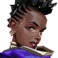

Agent
Number
Astra
energies of the cosmos to reshape
battlefields to her whim. With full command
of her astral form and a talent for deep
strategic foresight, she's always eons ahead
of her enemy's next move.
Cypher
one-man surveillance network who keeps
tabs on the enemy's every move. No secret is
safe. No maneuver goes unseen. Cypher is
always watching.
Fade
power of raw nightmares to seize enemy
secrets. Attuned with terror itself, she hunts
targets and reveals their deepest fears—
before crushing them in the dark.
Omen
shadows. He renders enemies blind,
teleports across the field, then lets paranoia
take hold as his foe scrambles to learn where
he might strike next.
Phoenix
shines through in his fighting style, igniting
the battlefield with flash and flare. Whether
he's got backup or not, he'll rush into a fight
on his own terms.
Skye
beasts trail-blaze the way through hostile
territory. With her creations hampering the
enemy, and her power to heal others, the
team is strongest and safest by Skye’s side.
Viper
array of poisonous chemical devices to
control the battlefield and choke the enemy's
vision. If the toxins don't kill her prey, her
mindgames surely will.